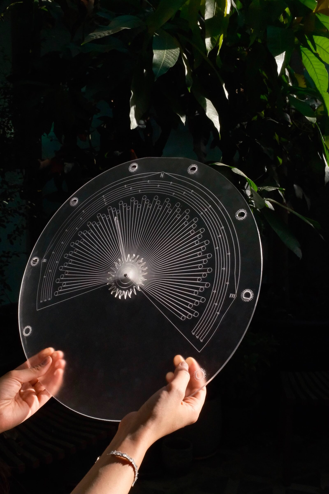
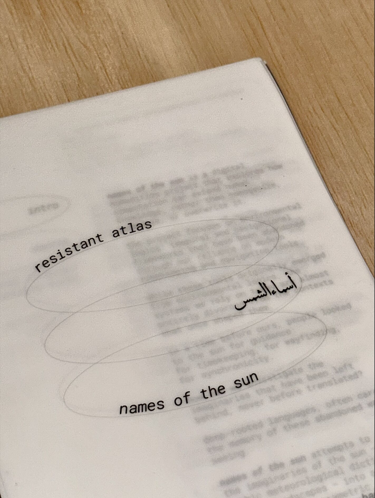
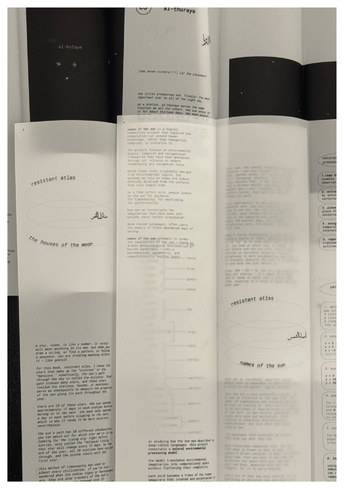
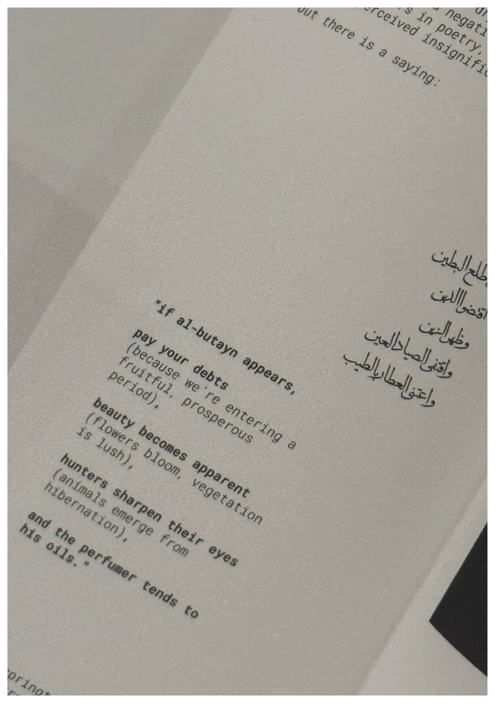

Names of the Sun
1c
Prototypes
Names of the Sun manifested into different digital tools, a book, and physical artifacts.
1. Digital Sundial
A 5-ft diameter acrylic “reverse” sundial that uses the sun’s gleam (as opposed to its shadow) to reveal which sun from the Resistant Atlas: Names of the Sun research corresponds to the sun overhead. Rather than telling time, it translates the sun’s visual alignment into the definitions drawn from the meteorology archives.


2. Sun Remote
A handheld ‘sundial’, which is connected to the larger installation, allows viewers to point toward any part of the sky, in which the larger dial will respond to in real time. This component reintroduces the embodied, environmental logic once used to understand the sun to the viewer in today’s time and orientation logic. This system integrates Arduino, ESP32, JavaScript, and TouchDesigner.



3. Printed Materials
A printed booklet archiving the sun names explored in this project.


Pamphlets with more information about the stars...


